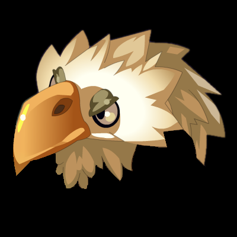
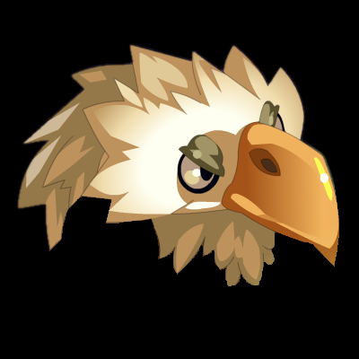
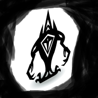
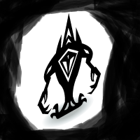

Tutoriel

Guide d’optimisation de l’ordre des quêtes
Ce guide est une version heavy, présentant les autres quêtes du jeu qui ne sont pas dans la version light du guide.
Code couleur :
Château d’Amakna et Port de Madrestam
50+
Montagne des Koalaks : Territoire des Dragodindes Sauvages, Lacs Enchantés et Forêt de Kaliptus
Plaines de Cania : Caniablanca
Landes de Sidimotes : Cimetière des Torturés et Désolation de Sidimotes
Saharach : Dunes des ossements
Être plus royaliste que le roi
Landes de Sidimotes : Route des Roulottes
100+
Ile de Pandala : Village de Pandala
Ile de Moon : Jungle Interdite
Montagne des Koalaks : Canyon sauvage
Plaines de Cania : Pénates du Corbac et Bois de Litneg
Ile de Frigost : La Bourgade et Champs de Glace
Plaines de Cania : Cirque et Lac de Cania
Ile d’Otomaï : Autour de l'Arbre
Montagne des Koalaks : Vallée de la Morh’Kitu
Ecaflipus : Pierres de l’élévation
Saharach : Territoire Cacterre
Ile de Frigost : Forêt des pins perdus, Lac Gelé et Berceau d'Alma
Ile de Pandala : Les 4 éléments
150+
Ile de Frigost : Larmes d’Ouronigride
Plaines de Cania : Landes de Cania et Dents de Pierre (Krosmoglob)
Ile de Frigost : Crevasse Perge et Caverne des Givrefoux
Saharach : Gorge des Vents Hurlants
Landes de Sidimotes : Gisgoul, Domaine et Caverne des Fungus
Ile de Frigost : Du Village Enseveli au Mont Torrideau
200+
Ile de Frigost : Château de Harebourg 1
Ile de Frigost : Château de Harebourg 2
Saharach : Citée Oubliée et Pyramide Maudite
Landes de Sidimotes : Terres Désacrées
Ile de Frigost : Roc des Salbatroces
Ile de Frigost : Royaume de Martegel
Atoll des Possédés et Cauchemar des Ravageurs


 
